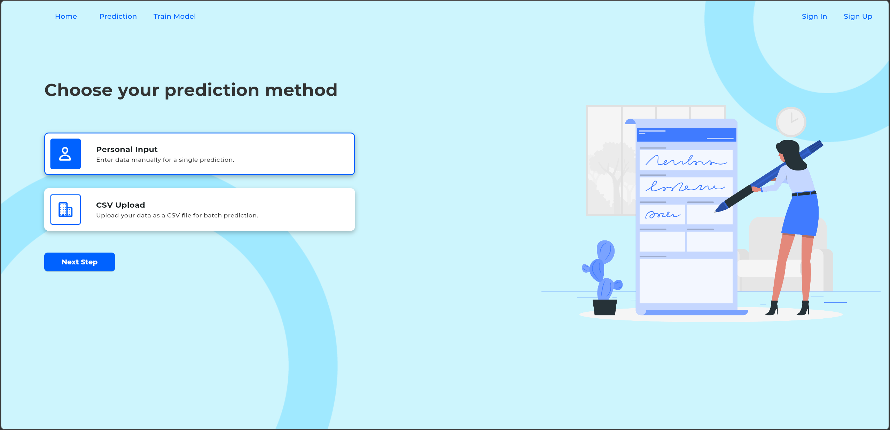
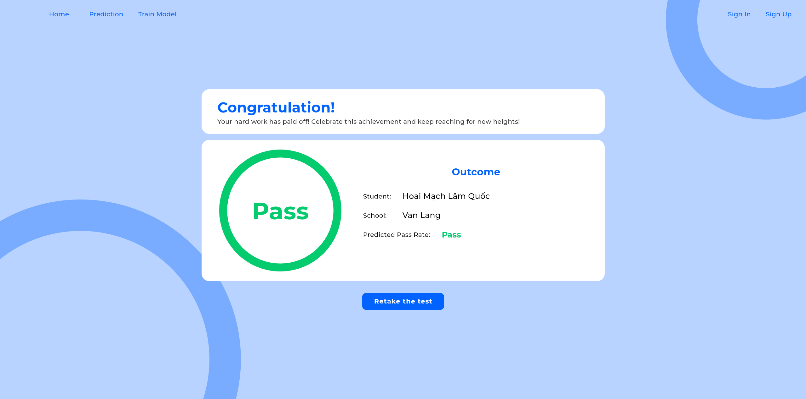
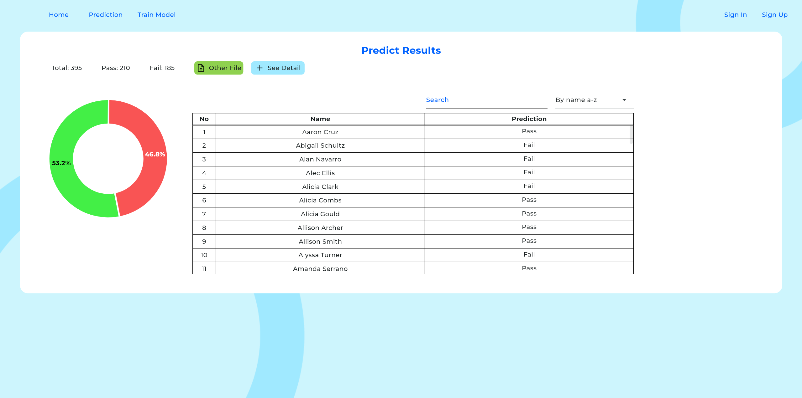

Kết quả thường chỉ được nhìn thấy sau khi quá trình học đã kết thúc.
Khó phát hiện sớm người học có nguy cơ suy giảm kết quả.
Kết hợp dữ liệu học tập, bối cảnh cá nhân và hành vi để dự đoán điểm số.
Có thể dự đoán G3 từ đặc trưng học tập, nhân khẩu học và hành vi với mức sai số có giá trị tham khảo hay không?
Tệp: student-mat.csv
Ngữ cảnh gốc: học sinh trung học tại Bồ Đào Nha, môn Toán.
| Nhóm | Ví dụ | Ý nghĩa |
|---|---|---|
| Nhân khẩu học | age, sex, address | Đặc điểm cá nhân |
| Gia đình | Medu, Fedu, Mjob, Fjob | Bối cảnh gia đình |
| Hành vi học tập | studytime, absences, failures | Yếu tố có thể điều chỉnh |
| Hỗ trợ & môi trường | schoolsup, famsup, internet | Điều kiện hỗ trợ |
| Thành tích trước đó | G1, G2 | Tín hiệu gần nhất |
missing ở cột huấn luyện
giảm cột dư thừa
đặc trưng sau encoding
lưu cấu trúc cho inference
Theo dõi điều kiện từ root đến leaf.
Phù hợp dữ liệu số và categorical sau encoding.
Gọn, suy luận nhanh, dễ đóng gói.
Sai lệch tuyệt đối trung bình khoảng 1,43 điểm.
Giải thích khoảng 69% biến thiên G3 trên 79 mẫu test.
316 train · 79 unseen test
G1 G2
absences · failures · studytime
gia đình · hỗ trợ · môi trường
G1/G2 là tín hiệu mạnh nhưng làm thời điểm cảnh báo gần cuối kỳ hơn.



Nhập biểu mẫu → dự đoán → xem kết quả.
Upload CSV → dự đoán nhiều bản ghi → tổng hợp.
school, sex, age, address, famsize, Pstatus, Medu, Fedu, Mjob, Fjob, reason, guardian
schoolsup, famsup, paid, activities, nursery, higher, internet, romantic
traveltime, studytime, failures, famrel, freetime, goout, Dalc, Walc, health, absences
G1, G2 · Target: G3
Cùng đơn vị điểm; dễ diễn giải.
Phạt mạnh hơn sai số lớn.
Mức biến thiên được giải thích.
Input: inputDataImport + version
name · prediction · originalIndex
GET /health
GET /totalmodel